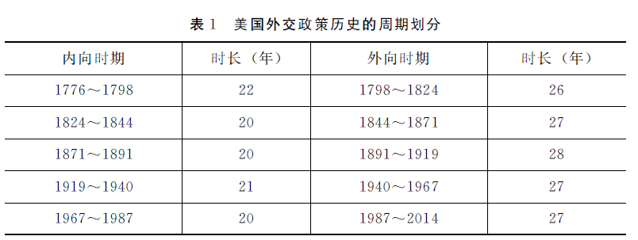
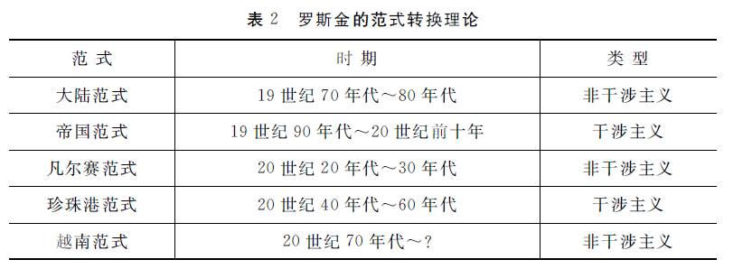
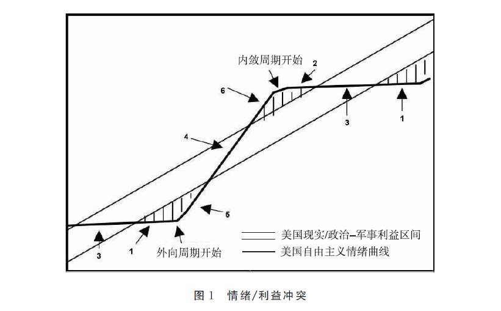

收录于合集
★
摘要： 考察美国立国以来的外交政策演变轨迹的视角大体上有两种：一是阶段性演化视角，认为美国外交政策运行呈现出一种阶段性变化的演化轨迹；二是周期视角 （或曰钟摆视角），认为美国外交政策演变遵循一定的钟摆定律，在两种情绪或范式之间不断转换。在研究美国外交政策历史时， 学界大都运用前一种视角而忽视后一种视角。自２０世纪５０年代起， 美国学界开始对美国外交政策演变的周期性规律进行研究， 形成了以法兰克·克林伯格为代表的 “内向— 外向” 情绪交替理论、迈克尔·罗斯金的 “干涉主义— 非干涉主义” 范式转换理论以及杰克·霍尔姆斯的 “情绪／利益” 理论。美国外交政策周期理论既有学理价值， 又存在难以克服的不足。研究该理论对于了解美国外交政策的演变规律、认清当前美国外交政策所处的周期阶段及其 对华政策的影响均具有重要的现实意义。
关键词 ：外向 内向 美国外交政策 周期理论
★
引 言
在观察美国立国以来的外交政策运行轨迹时， 大多数学者持一种阶段性演化的视角，认为美国外交政策运行呈现出一种阶段性变化的演化轨迹， 以因应不同时期的国内外挑战。 此种视角有如下特点 ： 一是强调外交政策的变化，认为美国外交政策为应对不同时期的国际国内环境而不断调整变化， 如二战结束后，美国将战时的大国合作政策调整为遏制共产主义政策。 **二是 突出演变的阶段性。**如比米斯将美国自立国到１９ 世纪末的外交政策演变划分为 “开创时期” 和 “扩张时期” 两个阶段。即使是冷战时期的遏制战略也存在 “冷战对抗” （1947~1962）、“竞争共存” （1962~1969）、“缓和” （1969~1979）、“重新对抗” （1979~1985） 和 “重启对话与冷战结束”（1985~1991） 五个阶段的变化。 三是凸显扩张。 持该视角的学者大体上认为美国外交政策演变以对外扩张为主线， 不断扩张成为美国外交政策演变的主旋律。 四是进化论取向 ， 总体上认为美国外交政策为因应不同时期国内外环境的变化而进行与时俱进的调整， 比如从二战期间不合时宜的孤立主义转向战后全面介入海外事务的、更能维护美国国家利益的国际主义，后者并从此成为美国外交政策的定型模式。上述演化视角大体上是以一种线性变化的眼光看待美国外交政策的运行轨迹， 较为充分地解释了不同时期美国外交政策的调整变化，尤其是美国从大陆外交到地区外交再到全球外交的扩张过程。然而，对美国近二百多年来的外交政策史进行考察便不难发现，由于美国历史上反复出现孤立主义情绪及其驱动下的内敛政策， 因此，积极介入海外事务的国际主义或对外干预不仅在整个美国外交政策演变史中未占主导地位，而且未必就是战后已然定型的外交政策模式。况且， 美国外交政策或对外战略并非处于始终或不断扩张的状态， 而是有扩有收， 扩收交替，对此，演化视角缺少解释或解释不足。
与上述主流演化视角不同，还有一些美国学者在经验分析的基础上， 提出美国自立国以来的外交政策演变并非是从一种姿态（如孤立主义的内敛） 转向另一种姿态 （如国际主义的外向），或是从一种模式 （如海外干预模式）转向另一种模式 （如海外非干预模式）。20世纪40年代以来形成的国际主义模式并非是定型的模式。相反，美国外交政策是每隔一段时间便在不同的情绪或模式之间进行转换或交替。这显然是一种周期视角或曰钟摆视角。 定义周期的基本要素有两个： “一是一定的时间间隔， 另一个是重复的序列。” 与演化视角相比，周期视角不仅能更好地解释美国历史上反复出现的孤立主义情绪和政策，揭示美国在国际舞台上时而扩张、时而收缩， 时而内敛、时而外向的规律，而且还能预测未来长时段内美国外交政策的走向。
从美国外交政策周期理论产生的学理渊源来看， 在社会科学领域， 最早对周期进行卓有成效研究的是经济学， 先后出现了米格拉周期、基钦周期、康德拉季耶夫周期和熊彼特长波技术论等周期理论， 其中， 尤以康德拉季耶夫周期理论的影响最为广泛。 在经济学周期理论的影响下， 政治学 （包括国际政治） 的学者也开始关注和研究国内和国际政治领域的周期现象。在国内政治领域，一些学者对美国国内政治中的两党轮替、自由主义与保守主义交替等现象的周进行研究，产生了选举周期理论、价值周期理论和统治周期理论。在国际政治领域，一些学者对战争、霸权等周期性出现的现象进行
研究，如昆西·赖特和戴维· 辛格关于战争周期的理论、乔治·莫德尔斯基的国际政治长周期理论等。济学和政治学的周期理论启迪了法兰克· 克林伯格 、斯坦利· 霍夫曼 、汉斯· 摩根索 和迈克尔·罗斯金 等学者在不同时期以周期视角考察美国外交政策演变，从而形成了不同于主流演化视角的美国外交政策周期理论谱系。 作为一种外交政策周期理论， 美国外交政策周期理论填补了国内政治周期理论和国际政治周期理论之间的空白， 其理论价值不容小觑。本文通过介绍和评价克林伯格和罗斯金等人的美国外交政策周期理论， 以期能对国内的相关研究起到抛砖引玉的作用。
**
**
美国外交政策周期理论的形成与发展
在美国外交政策周期理论的产生和发展中， 相继出现了克林伯格的 “内向—外向” 情绪交替理论、罗斯金的 “干涉主义—非干涉主义” 范式转换理论和霍尔姆斯的 “情绪／利益” 理论。
１．克林伯格的“内向—外向” 情绪交替理论
最早对美国外交政策周期进行开创性系统研究的是美国学者法兰克·克林伯格，他在1952年创立了具有里程碑意义的美国外交政策 “内向—外向”情绪交替理论，这既是他对其所处时代的外交问题进行思考的产物， 又是其在学理层面上对已有研究进行质疑的结果。从二战结束到20世纪50年代初，美国面临孤立主义情绪的回潮，克林伯格认为这将使 “美国继续在世界事务中扮演领导角色的信心削弱”， 而 “美国的国防和巩固我们时代的自由世界’ 在很大程度上取决于美国的领导”。克林伯格试图通过对美国历史上的 “内向—外向” 情绪周期性交替规律的揭示让美国领导人明白：“美国很有可能在下一个十年或更长时间内继续扮演世界领导角色， 即使‘撤出’ 期或许会接踵而至。”与此同时， 在当时的美国学界， 阿尔蒙德等学者对二战以来的美国公众舆论展开了卓有成效的研究, 并形成了关于 “大众情绪的不稳定性和周期性波动” 的结论。对此， 克林伯格认为，阿尔蒙德的结论是从短时期内对公共舆论的考察中得出的， 若从美国历史的长时段来考察，则 “公众情绪大体上的稳定似乎更加明显”。
在对美国的国际政治—军事行为倾向的长周期模式分析中， 克林伯格假定美国国内公众情绪在很大程度上决定了美国外交政策的姿态。美国外交政策的演变受美国公众 “内向” 与 “外向” 两种情绪的交替驱动。所谓 “内向” 情绪是指一国不愿对他国积极施压，而 “外向” 情绪则是一国愿意在边界之外对他国积极施加经济、外交和军事影响。 与此相对应的是，“美国在国际上的姿态呈现出 ‘内向’期与 ‘外向’期的相互交替，亦即孤立主义的撤出期和国际主义的介入期的交替”。
在克林伯格看来， “内向” 和 “外向” 两种情绪自1776年以来在美国外交政策中相当有规律地交替着。美国外交政策一个完整的周期由大约21年的 “内向” 阶段和大约27年的 “外向” 阶段构成。 按照克林伯格对于不同时期的研究结果，美国外交政策迄今为止经历了四个半周期， 即五个内向期和四个外向期，当前正处于第五周期的外向期， 每个内向与外向期的起止年代和时长见表１。

美国外交政策历史的演变何以出现 “内向—外向”的周期性波动？ 克林伯格对此问题给出了自己的解释。 **他认为， 美国外交政策的周期性波动是 “内部因素”、“外部因素” 和 “超级体系因素” 综合作用的结果。**就内部因素而言， 克林伯格的哲学逻辑是：社会是变化的， 而社会的变化是有限度的和有规律的。他认同索罗金提出的 “内在变化原则”，即在一个自由的社会里变化是相当容易的， 因此， 社会中的少数派能够通过坚持不懈的斗争赢得胜利并且推动政策的改变。然而， 社会变化也是有限度的。社会变化限度性的意义在于： 当政策走向极端时，国家会处于相当危险的境地，民众会通过直觉和推理认识到这一点， 并促使政府及时调整政策。有规律的循环运动是人类社会发展的基本法则， 美国外交政策也不例外。 此外，克林伯格认为代际差异也是导致周期形成的一个重要原因。
美国 “政治世代” 的平均时长是25年。“在20或30年内， 新的年轻一代将成为政治上活跃的多数。一个新的政治世代渴望认可的需求， 与其对老一代的工作自然的怀疑态度结合起来，也许可以解释美国外交政策的转变。”
克林伯格认为，外部因素也是塑造美国国内情绪变化的一种重要力量， 进而导致美国外交政策的转向。 从外部经济环境的影响来看， 尽管经济环境的变化在驱动美国外交转向内向还是外向方面的作用并不明确， 但经济环境的变化确实催生了美国外交政策的重大调整。如， 始于1883年的经济萧条对推动1889年的扩张起了重大作用；1939年的大萧条则加深了美国的孤立主义情绪。从外部政治环境来看， 欧洲的战事、边界危机等因素构成了美国外交政策转向的重要动力。“美国外交政策转向外向时期通常发生在欧洲或世界外交政策的活跃期间”。像1895年委内瑞拉边界危机那样积蓄已久的事件的爆发也是影响美国外交政策情绪的重要外部因素。
就超级体系因素而言，美国外交政策的外向时期与大国间的战争时期大 致重合，这种状况促进了美国的海外扩张。 如一战、二战以及冷战的爆发均促使美国摆脱国内孤立主义的羁绊，在外交上奉行 “全球行动主义” 的政策。
值得注意的是，克林伯格并非同等看待内部、外部和超级体系因素在美国外交政策周期形成中的作用。在他看来， 世界政治的周期并不是美国民众情绪交替的主要原因，社会中富于创造的少数的 “退隐和复出” 才是驱动美国外交政策情绪周期性交替的主要动力。
克林伯格的研究结论得到了克拉斯纳 、塞 缪尔· 亨廷顿 和斯塔尔 等众多美国学者的认可。他所做出的系统性研究使其成为美国外交政策周期理论公认的奠基者。
２．罗斯金的“干涉主义—非干涉主义” 范式转换理论
20世纪60年代， 一些美国学者也从周期视角考察美国对外关系或外交政策演变，如德克斯特· 伯金斯认为， 美国对外关系首先是 “相对和平的情感” 时期，接着是 “好战和战争情绪的上升” 时期， 再接着是 “战后民族主义” 时期， 最后又回归到 “相对和平的情感” 时期。霍夫曼则分辨出 “美国外交关系的两种节拍”， 即 “从撤出 （或在完全撤出不可能时优先关注国内事务） 阶段到充满活力， 即在国际舞台上以救世主自居横冲直撞的阶段”。摩根索也视 “美国外交政策运行在不加选择的孤立主义和同样不加选择的国际主义或全球主义两个极端之间来回摆动”。但上述学者的论述既不系统也不具体，因而未给学界留下深刻的印象。
到20世纪70年代初， 美国深陷越战泥潭， “越战对美国外交政策的直接影响已经显现：参议院对总统再度发难、军队士气低落、国际经济困难、盟国怀有疑虑”。越战的创伤使迈克尔·罗斯金认为美国自 “珍珠港事件” 以来的干涉主义热情减退，并转入一个与两次大战间孤立主义类似的非干涉主义取向期。与此同时，罗斯金观察到许多关于美国外交政策的讨论聚焦于美国对外行动的经济解释、官僚政治、功能失调和行政立法关系等视角。虽然这些流行的视角对美国外交政策研究做出了有益的贡献，但他们都是分散性的局部视角，缺乏从决策精英所持有的战略假设的整体角度来解释美国的外交行为，亦即 “没能认识到在一些时期美国政策制定者认为全球事务值得为之而战，而在另一些时期却对世界上的大多数事情漠不关心”。有鉴于此，罗斯金欲创立一种整体视角对美国历史上的对外干涉与非干涉时期进行解释。在当时，托马斯·库恩 创立的范式理论已被广泛应用于社会学、心理学和管理学等领域。库恩所称的范式是 “举世公认的科学成果在一定时间内为特定专业的人士 提供模式化问题和解决方法”，因此，范式是一个领域的基本假定，接受它对于专业人士来说是强制性的。范式的转换通常在年轻的创新者发现现有的规则不能解释新的情况下发生。 在库恩范式理论的启发下，罗斯金建立起用范式来统摄上述对美 国外交政策进行局部性解释的整合视角， 形成了其 “干涉主义” 与 “非干涉主义” 的范式转换理论。
罗金斯认为，对美国外交政策中对 “我们应该是在大洋的这一边进行防御来保护我们的利益，还是跨过大洋积极进行海外干预来保护我们的利益？”这一古老问题的回答可分为两种范式，赞成前者是一种 “非干涉主义”的范式，赞成后者是一种 “干涉主义”的范式。罗斯金把１９世纪７０年代以来的美国外交政策史划分为不同的范式时期。尽管范式的具体内容不同，但其实质是一致的， 即揭示美国外交政策是干涉主义还是非干涉主义。

罗斯金认为，干涉主义与非干涉主义范式形成和转换的首要原因是重大的历史性事件的冲击。他认为，决定性历史事件的冲击导致一代人 “战略性传统智慧”的形成， 并引导着公众对外政策的取向。按照罗斯金的观点，“珍珠港范式”是干涉主义的范式。该范式成型于创伤性的珍珠港事件和第二次世界大战。它吸取了非干涉主义的 “凡尔赛范式”的教训， 其所蕴含的战略智慧是 “对付侵略必须正面迎击而非绥靖”。然而， 一场旷日持久的越南战争在逐渐驱除深深扎根于美国人心中的 “珍珠港意象”， 越战的失利“似乎让干涉主义者的政策取向名声扫地。伴随着越南战争而来的是一套裹在非干涉主义范式中的新的教训”。
罗斯金还指出，外交政策范式转换很大程度上取决于行政部门与立法部门之间的关系。 “如果国会接受总统的领导并且提供他所需要的东西， 美国就能够进行干预行动；当国会、尤其是参议院厌倦干涉活动并且对强势总统的领导感到不满时，对外干涉的可能性就会降低。”通常而言， 在干涉主义范式时期，国会赞成政府的外交政策行动，并通过各种手段对政府的行动给予资金支持；而在非干涉主义范式时期， 国会所起的作用刚好相反。 “强势的总统迟早会激起国会的反制， 国会至上反过来也会导致总统权力的恢复。”行政和立法部门权力的此消彼长及他们对外交政策主导权的争夺， 驱动着美国外交政策在干涉主义—非干涉主义范式之间进行转换。
罗斯金特别强调代际对范式转换的影响。 他认为， 美国外交政策中存在明显的政治代际。他认可亨廷顿关于美国国内政治的代际转换理论， 即 “从周期的角度来解释美国历史， 在寿命上大约是一个代际”。在罗斯金看来，“干涉主义—非干涉主义” 范式间的转换大约经历一个代际， 亦即在执行一种外交政策范式产生灾难性的后果后， 与老一代精英相比，新一代精英对美国外交政策中的古老问题有着不同的答案， 两代之间的妥协变得不可能。随着老一代的退休或离世，他们所倡导的范式逐渐被新一代所支持的范式所取代。因此，新范式的胜利在很大程度上就是新一代对老一代的胜利。此外， 罗斯金承认外部因素是影响美国外交政策范式转换的因素， 但是 “这种外部力量可能每隔一个代际对美国产生影响”。
３．霍尔姆斯的情绪／利益周期理论
20世纪80年代初，美国为了对抗苏联，恢复其在世界上的地位和威望，时任美国总统的里根于1983年提出 “星球大战计划”， 同时加强了与苏联在亚洲、非洲和拉美等地的竞争。然而，美国公众并非全然支持里根政府为追求国家政治和军事利益所采取的政策。例如在1984年， 只有30％的美国人支持政府对尼加拉瓜反政府军的军事支持。这使美国学者杰克·霍尔姆斯看到了公众情绪与政府所追求的国家利益之间的张力， 成为其创立美国外交政策情绪／利益理论的现实基础。
从学理上讲，赖特和辛格关于战争周期理论的研究给霍尔姆斯留下了深刻的印象，启发了后者运用周期视角 “将对权力的自由主义、理想主义等传统解释融入美国对外权力” 的学术兴趣。而当他涉足美国外交政策周期的研究领域时，首先面对的是已广为学界知晓的克林伯格的关于美国外交政策“内向—外向” 情绪交替理论。霍尔姆斯的理论创新遂从质疑克林伯格对外交政策情绪概念化的方式开始。他认为， 克林伯格对外交政策情绪进行要么内向、要么外向的两分法界定过于简单。严格来讲， 由于情绪在一个内向或外向时期并非同种类型 ，因此，用一种外交政策情绪来界定一个内向期或外向期显得不够科学和严谨。受到亨廷顿在 1957年所著的《士兵和国家》一书中的观点———即当政策不能反映美国利益时， 美国公众的情绪就会发生阶段性的变化———的启迪，霍尔姆斯在1985年引入了在美国公众情绪和国家利益之间存在冲突的概念， 认为 “在美国公众大体上的自由主义情绪和美国在国际体系中的现实主义者的利益之间存在动态关系”，④这种动态关系为其构建美国外交政策 “情绪／利益” 周期理论奠定了基石。
很显然，霍尔姆斯对美国外交政策周期理论的最大贡献在于在克林伯格“内向—外向” 情绪的基础上引入了国家利益变量， 认为国家利益与主导情绪间的张力或冲突是导致美国外交政策出现内向与外向相互交替的根本原因，从而形成了其独树一帜的 “情绪／利益周期理论”。他认为： “主导情绪会将国家推向一个极端，而为了维护国家利益， 外部现实又会迫使主导情绪转向。”国家利益与主导情绪间的碰撞所导致的美国外交政策内向与外向周期性的交替如图１所示。

适度的３和４区间，出现在美国自由主义的情绪与美国在国际体系中的政治。如图１所示，１ 与６ 分别是极端内向与极端外向区间。在１ 和６ 之间是—军事利益一致时。因此， “在美国占主导地位的自由主义意识形态与美国的政治经济利益间的兼容性不但造成而且限定了情绪的波动”。霍尔姆斯的情绪／利益理论建立在六个命题 上， 这六个命题环环相扣， 共同构成了情绪／利益理论的分析框架。 **第一， 公众情绪统 治命题。**公众情绪极大地限制甚至决定精英的决策。 第二， 美国自由主义情绪命题。 用公众情绪的力量来约束美国外交政策来源于美国古典自由主义 的本性。霍尔姆斯认为，美国国内没有真正的保守主义。他赞同亨廷顿的分类，即美国的保守主义是 “商业自由”， 美国的自由主义是 “改革自由”。“商业自由” 强调经济全球化的重要性，“改革自由” 则强调在全球开始扎根的人道主义价值的重要性。两者在国内问题上经常发生冲突，但在外交政策上不易发生冲突。无论政府和国会如何变化， 在对外方面， 自由主义的共识是很容易获得的。 第三，利益命题。 霍尔姆斯主要强调美国在国际体系中的 政治—军事利益，追求政治—军事利益是美国外交政策中的一个永恒主题。经济和人道主义利益相对不易变化， 政治—军事利益的重要性则与时俱变。与此同时，实现政治—军事利益所需要的外交活动的强度或水平也随时而变。 第四，情绪／利益冲突命题。 此命题把美国外交政策的国内动力———自由主义情绪———和美国在国际体系中现实的政治—军事利益联结起来， 并且认为两者间存在着冲突。美国政府倾向于在对外政策上运用权力或扩张权 力，而公众的自由主义意识形态对使用权力的反感抑制了政府在对外政策上 的过度扩张权力。 第五， 行政／立法命题。 行政部门与立法部门的斗争及其结果也推动着美国外交政策的转变。 “在外向时期， 行政部门主导政策的制定；而在内向时期，公众的情绪会通过国会和民意来限制政府的行动。” 第六，极端内向／外向命题。 情绪的波动与美国的利益并不总是一致， “当两者之间差距扩大时，美国会发现自己或者处在极端的内向时期或者处在极端的 外向时期来追求其利益，但这两者均不可取。接着情绪会发生改变， 从内向转向外向或者相反。”此外，霍尔姆斯还在克林伯格理论的基础上将每个外向期和内向期进一步细分为三个亚阶段，从而使对美国外交政策周期的时段划分更加深入。
４．冷战后其他学者的相关研究
冷战结束后，美国国内出现了“新孤立主义” 情绪， 克林顿总统称之为“存在于两党内的孤立主义者的反弹”，并警告 “只有当我们继续领导时才能取得成功”。冷战的结束也引发了关于美国外交政策中最古老问题的辩论， 即围绕海外干预还是孤立的辩论。
布莱恩 · 波 林斯和 兰 德 尔 · 肖 维 勒 两位学者注意到， 此次辩论的时间点与克林伯格关于美国历史上 “内向—外向” 阶段情绪转换的预测是一致的， 这引发了他们进一步研究美国外交政策 “内向—外向” 周期的兴趣。在当时的美国学界， 学者多从国内层次的角度研究美国外交政策，倾向于将利益和能力视为国家这种自治行为体 “给定” 的特征。与此同时， 以古里维奇 为代表的部分学者则致力于从国际体系对国内政治塑造的角度来研究美国外交政策，这为两位学者质疑 “国家利益和能力给定” 的假设提供了理论视角。两位学者承认他们的研究手段是与古里维奇的 “颠倒的第二意象” 理论相一致的。而在80年代末和90年代初，戈德斯坦 等人对经济长波的周期性进行了卓有成效的研究， 这进一步启发了两位学者研究作为体系结构因素的世界经济周期如何影响美国外交政策内向—外向周期。他们建立了一种联结体系与国内层次的双层分析框架来解释美国外交政策调整中出现的“内向—外向” 钟摆模式，将全球经济的长波理论与若干用来解释国家外交政策和行为的 “第二意象” 的视角联系起来。两位学者通过考察表明， 美国外交政策中情绪的 “内向—外向” 摇摆与全球和美国经济的上升与下降的周期相关：美国外交政策的内向期恰恰处于世界和美国经济的下降时期（包括“衰退”、“萧条” 两个阶段），美国外交政策的外向期则处于世界及美国经济的上升时期 （包括 “复苏”、“繁荣” 两个阶段）。此外， 两人的研究还表明， 全球经济状况和美国对外冲突行为之间存在周期性的同步关联： 美国在经济下降时期的内向阶段介入军事争端的次数较之前或之后的经济上升时期的外 向阶段少得多，并且在内向时期冲突的持续时间远远少于外向阶段。
除上述经济周期对美国外交周期影响的视角外， 冷战后也有学者从其他视角拓展对美国外交周期理论的研究。盖尔·伦德斯塔德 从文化的角度来解释美国外交政策的钟摆效应， 认为美国建立在相互冲突的亚文化价值观上，在一个时期某一价值观被强调， 而在另一个时期相反的价值观趋于占主导地位。在美国文化中长期存在道德准则与实用主义、乐观主义与悲观主义、权力与理想、变革与稳定等价值观念的冲突。美国外交政 策在不同的价值观念的主导下表现出不同的行为， 由此影响美国外交政策钟摆式的循环。玛丽· 何理汉则从国会的角度探讨了国会政治与美国外交政策周期现象之间的关系。国会内部在外交政策领域的共识与分歧、积极与消极直接影响美国在国际上所扮演的角色类型。
综上，克林伯格于２０世纪５０年代创立美国外交政策 “内向—外向” 情绪交替周期理论，并在７０～９０年代结合时代发展和最新材料加以完善。罗斯金借用库恩范式考察美国外交政策在孤立主义与国际主义之间的钟摆规律，形成了其独具特色的 “干涉主义—非干涉主义” 范式转换周期理论。应该说，罗斯金的理论与克林伯格的理论在本质上没有区别， 都是探讨美国外交政策历史演变的周期性规律，只是所采用的视角和概念名称不同而已。比 如，克林伯格的研究视角是公众情绪对美国外交政策演变的影响， 罗斯金采用的则是范式转换视角； 克林伯格周期理论中的核心概念 “内向” 和 “外向”与罗斯金理论中的核心概念 “非干涉主义” 和 “干涉主义” 的内涵也基本相同，都分别表示美国对外政策中的 “孤立主义” 和 “国际主义” 含义。两者的相似性还表现在他们对美国外交政策周期的划分基本一致。而且， 两者都运用代际效应和行政—立法关系来解释美国外交政策周期。因此，从某种程度上讲，罗斯金的范式转换理论是克林伯格情绪交替理论的变种。霍尔 姆斯则在克林伯格 “内向—外向” 情绪交替理论的基础上构筑了自己的情绪／利益周期理论，从而发展了克林伯格的外交政策周期理论。然而，其理论并没有脱离克林伯格 “内向—外向” 交替理论的总体框架， 只是在克林伯格“情绪”变量的基础上引入 “利益” 变量， 通过主导情绪与国家利益之间的张力来解释美国外交政策何以出现内向与外向的周期模式， 因此， 其理论与克林伯格的相似性大于罗斯金与克林伯格之间的相似性。波林斯、肖维勒和盖尔·伦德斯塔德等学者则从经济周期、文化价值观等不同角度解释美国外交政策出现 “内向—外向” 钟摆的原因， 他们的研究丰富了美国外交政策周期理论的内容，也表明美国外交政策周期理论渐趋成熟。
未完待续
文章来源： 《当代亚太》2012年第 4期
筛选：凌羽 编辑：米金金